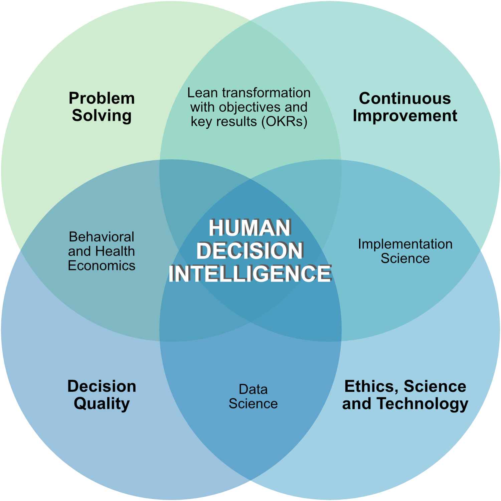

![]()

Decision-making is our most important activity. “A decision is a choice between two or more alternatives that involves an irrevocable allocation of resources” [1]. Decisions drive vision, strategy, policy, and transformational change. Every decision has causal assumptions, predictions, trade-offs, and an opportunity cost—the lost benefit of the better option(s) not chosen or not considered.
Most decisions are quick or automatic and are influenced by intuition. Occasionally, we slow down to deliberate (often in teams) and we are influenced by our intuition, non-conscious cognitive processes, group psychology, power dynamics, and politics.
Decision intelligence is using ethics, science, and technology to improve individual and team decisions for finding and solving problems, and achieving objectives and key results in challenging, environments, including volatile, uncertain, complex, or ambiguous (VUCA) environments.
In spite of the importance of decision making, few are trained on how to make better decisions. I am often asked what are my favorite decision books. To promote better decision making I list several here in their primary category.
Please send me your favorite decision book recommendations and why you like them.
Prerequisites
These foundational books are about improving how we process information from the external world (exteroception) and our bodies (interoception), how we think and feel (cognition and emotions), and how we believe and behave. Without awareness of human beings’ limitations and pitfalls in these areas, we are bound to make poor decisions, even against our best interests.
- Hess E and Ludwig K. Humility is the New Smart: Rethinking Human Excellence in the Smart Machine Age. Berrett-Koehler Publishers, a BK Business Book; 2017. Introduction to the critical importance of humility, especially intellectual humility, having self-awareness, receiving accurate feedback, listening, learning, improving, and building trust.
- Grant A. Think Again: The Power of Knowing What You Don’t Know. Viking (February 2, 2021) “Think Again is a must-read for anyone who wants to create a culture of learning and exploration, whether at home, at work, or at school… In an increasingly divided world, the lessons in this book are more important than ever.” —Bill and Melinda Gates
- Galef J. The Scout Mindset: Why Some People See Things Clearly and Others Don’t. Portfolio (April 13, 2021) “We know a lot about how flawed human reasoning is, but surprisingly little about how to repair it in our daily lives. Thankfully, Julia Galef is here to change that. With insights that are both sharp and actionable, her book picks up where Predictably Irrational left off. Reading it will teach you to think more clearly, see yourself more accurately, and be wrong a little less often.” —Adam Grant, psychology professor”
- Barrett LF. Seven And A Half Lessons About the Brain. Mariner Books (October 26, 2021). Brilliant short read that demystifies the brain and emotions. This is a great introduction to modern neuroscience. For a more comprehensive introduction read “How Emotions Are Made: The Secret Life of the Brain” by the same author.
- Haidt J. The Righteous Mind: Why Good People Are Divided by Politics and Religion. Knopf Doubleday Publishing Group; Reprint edition (February 12, 2013) “Drawing on his twenty-five years of groundbreaking research on moral psychology, Jonathan Haidt shows how moral judgments arise not from reason but from gut feelings. He shows why liberals, conservatives, and libertarians have such different intuitions about right and wrong, and he shows why each side is actually right about many of its central concerns.”
Behavioral economics focus
- Sibony O. You’re About to Make a Terrible Mistake: How Biases Distort Decision-Making and What You Can Do to Fight Them. Little, Brown Spark (July 14, 2020). Covers nine common decision-making traps – and learn practical tools for avoiding them – in this “masterful,” research-based guide from a professor of strategic thinking
- Sunstein C. Wiser: Getting Beyond Groupthink to Make Groups Smarter. Harvard Business Review Press; First Edition (December 23, 2014). How to use behavioral economics to improve team decisions.
- Kahneman D. Thinking, Fast and Slow. Farrar, Straus and Giroux; 1st edition (March 1, 2013). Classic, transformational book from a pioneer in behavioral economics.
Structured decision making
- Duke A. How to Decide: Simple Tools for Making Better Choices. Portfolio; Illustrated edition (October 13, 2020). Brilliant, practical introduction to decision making that integrates cognitive psychology, probability, and practical tools
- Duke A. Thinking in Bets: Making Smarter Decisions When You Don’t Have All the Facts. Portfolio; Reprint edition (May 7, 2019). This is the original book on decision making by Anne Duke.
- Hammond JS, Keeney RL, Raiffa H. Smart Choices: A Practical Guide to Making Better Decisions. Crown Business; 2002. Classic book on making better decisions when faced with multiple competing objectives and trade-offs.
- Keeney R. Give Yourself a Nudge: Helping Smart People Make Smarter Personal and Business Decisions. Cambridge University Press; 2020. This book extends the Hammond book and includes how to influence others’ decisions that impact you.
Decision making under deep uncertainty (including in crises)
- Roberto MA. Why Great Leaders Don’t Take Yes for an Answer: Managing for Conflict and Consensus. FT Press; 2nd edition (September 25, 2015). How leaders can build consensus and make decisions in the face of disasters. Reviews catastrophic decisions and how to avoid them.
- Marcus LJ, McNulty EJ, Henderson JM, Dorn BC. You’re It: Crisis, Change, and How to Lead When It Matters Most. PublicAffairs (March 16, 2021). Comprehensive framework for how to lead during disasters. Based on empirical research during actual disasters.
- Sunstein CR. Averting Catastrophe: Decision Theory for COVID-19, Climate Change, and Potential Disasters of All Kinds. NYU Press (April 27, 2021)
- Kay J and King M. Radical Uncertainty: Decision-Making Beyond the Numbers. WW Norton & Company (September 7, 2021). “The limits of certainty demonstrate the power of human judgment over artificial intelligence. In most critical decisions there can be no forecasts or probability distributions on which we might sensibly rely. Instead of inventing numbers to fill the gaps in our knowledge, we should adopt business, political, and personal strategies that will be robust to alternative futures and resilient to unpredictable events.”
Decision analysis
Introductory
- Spetzler C, Winter H, Meyer J. Decision Quality: Value creation from Better Business Decisions. Wiley; 2016. Covers the basics of decision analysis including how to avoid cognitive biases.
Intermediate
- Sox HC, Higgins MC, Owens DK. Medical Decision Making. Publisher : Wiley-Blackwell; 2nd edition (July 29, 2013). Classic book in clinical decision analysis
- Myriam Hunink, MG. Decision Making in Health and Medicine. Cambridge University Press; 2nd edition (October 16, 2014). Classic book in clinical decision analysis
Advanced
- Peterson M. An Introduction to Decision Theory. Cambridge University Press; 2nd edition (April 4, 2017) An introduction to decision theory is both accessible and comprehensive, covering topics including decision making under ignorance and risk, the foundations of utility theory, the debate over subjective and objective probability, Bayesianism, causal decision theory, game theory, and social choice theory.
- Abbas AE, Howard RA. Foundations of Decision Analysis. Pearson; 1st edition (March 19, 2015). Serious introduction to decision analysis from a pioneer in the field (Ronald A. Howard).
- Fenton N, Neil M. Risk Assessment and Decision Analysis with Bayesian Networks. Chapman and Hall/CRC; 2nd edition (September 12, 2018) Introduction to decision analysis using Bayesian networks. For background see Population health thinking with Bayesian networks.
- Kochenderfer MJ, Wheeler TA, Wray KH. Algorithms for Decision Making. The MIT Press (2022).
Decision intelligence
“Decision intelligence is an engineering discipline that augments data science with theory from social science, decision theory, and managerial science. Its application provides a framework for best practices in organizational decision-making and processes for applying machine learning at scale. The basic idea is that decisions are based on our understanding of how actions lead to outcomes. Decision intelligence is a discipline for analyzing this chain of cause and effect, and decision modeling is a visual language for representing these chains.”1
- Pratt L. Link: Link: How Decision Intelligence Connects Data, Actions, and Outcomes for a Better World. Emerald Publishing (September 16, 2019). ``Pratt tells the stories of decision intelligence pioneers worldwide, along with examples of their work in areas that include government budgeting, space exploration, emerging democracy conflict resolution, banking, leadership, and much more.’’
Additional relevant books
- Edmondson AC. The Fearless Organization: Creating Psychological Safety in the Workplace for Learning, Innovation, and Growth. Wiley; 2018. Reviews the science of psychological safety and its critical role in decision-making, learning, and continuous improvement.*
- Pearl J, Mackenzie D. The Book of Why: The New Science of Cause and Effect. Basic Books; Reprint Edition (August 25, 2020), ISBN-13: 978-1541698963. Conceptual intro- duction to causal thinking, reasoning, and inference. This book should be required reading for all public health and medical professionals.
References
Footnotes
Decision intelligence. Available from https://en.wikipedia.org/wiki/Decision_intelligence↩︎